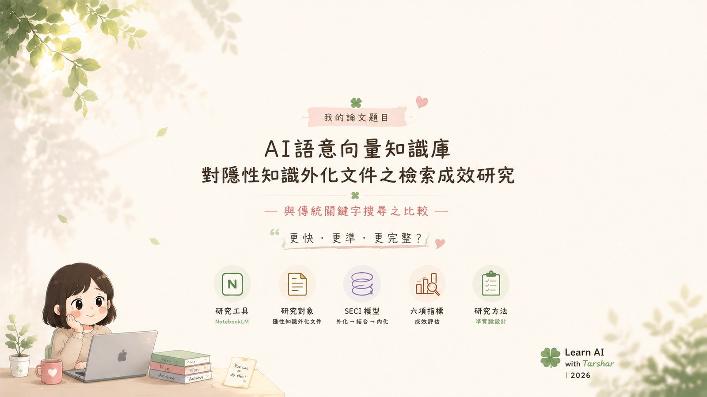
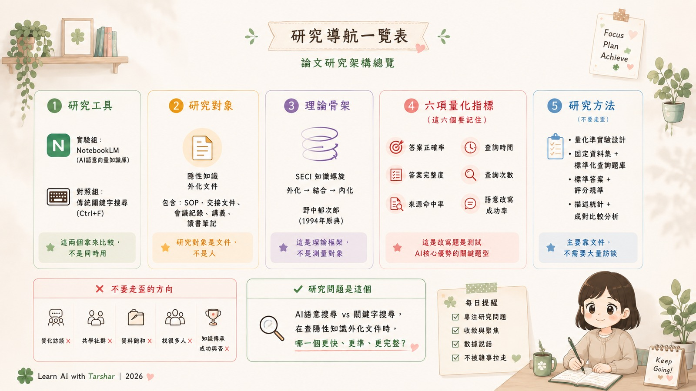

說明字面查找與自建 RAG 的現行功能、未實作項目及研究界線。
對應最新 59 頁修正工作稿，可依章節查看待補與待確認內容。
★現行研究入口｜10/26 方法修訂討論稿
五章全文修訂為 59 頁；原題完整保留，題名與方法待教授裁決。Meeting 資料包固定保存本輪全文、討論單與證據，會議日期待定，尚未核定。
E1、E3、E4 工程修正與驗收完成；E2 欄位與逐筆初篩完成，138 筆函釋的人工效力核定仍未完成。78 項工程測試不能代替正式研究結果。
實驗研究與平台完整提交報告
43 頁報告、完整程式與語料、提示詞與指令、文獻 DOI 及實跑證據。已公開找到的問題，正式方法仍待確認。
開啟審查報告、Word／PDF 與完整附件 →論文架構、待確認決定與五章核對
五章工作稿架構可以沿用；第三章優先補強追問測試、操作規程與評分。平台架構圖與論文章節、研究設計分開說明，原全文保留。
🟢 綠區我的論文題目 · 研究架構總覽
這兩張圖是綠區舊題目與舊架構，保留當時版本，非紫區現行規格（看紫區現行方向）。這些圖用於追溯當時構想；現行方向請由上方紫區入口閱讀。點圖可放大。


建議閱讀路線
先建立 SECI 理論，再走向 AI 實務、理論修訂、RAG 技術與評估方法。每個圓點都可以打開一篇文獻。
綠｜理論藍｜實務與框架紅｜研究現象金｜技術與評估
一篇文獻怎麼讀
固定跑完六站，成果就不會只是摘要，而會變成之後寫第二章、第三章與教授討論時能直接取用的研究材料。
01身分核對題名、作者、年份、期刊、DOI、文章類型
02快速判讀一句話結論、與題目關聯、閱讀優先度
03研究拆解問題、理論、方法、樣本、分析與限制
04頁碼證據主張對應頁碼、表格、圖與可引用原句位置
05論文定位放入哪一章、支持或反駁哪個論點
06留下行動待查問題、待問教授、下一篇要串哪一篇
全部文獻
A＝英文原文、B＝中文原文、D＝低相關備查。星等沿用你的雲端資料夾，沒有擅自改動。
📚 綠區累積文獻原庫，紫區依沿用清單選用。這裡的書目、摘要與頁碼證據兩區共用；閱讀卡裡「放進自己的論文」的用途欄多為綠區舊規劃。紫區沿用清單見 紫區選用文獻。
找不到符合的文獻，換一個關鍵字或篩選條件。
目前最重要的差別：直播電台用「時間碼＋講解節點」；論文閱讀改用「頁碼＋研究證據＋可寫入章節」。網站上的個人狀態與筆記會保存在你正在使用的這台裝置，原始文獻與正式檔案仍以 Google Drive 為準。